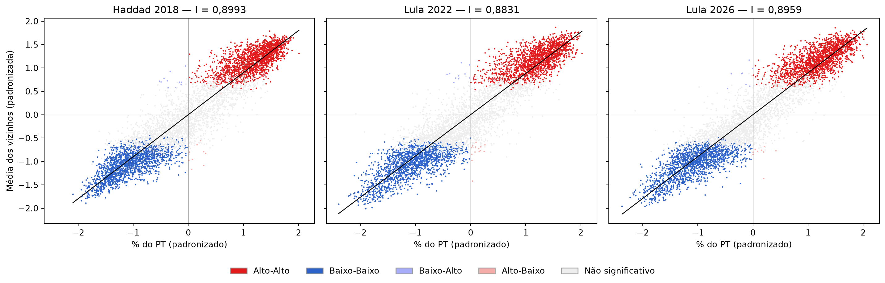
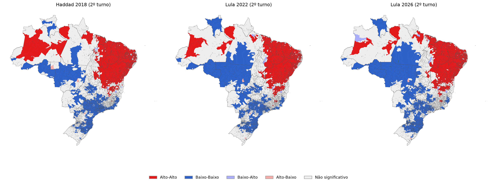
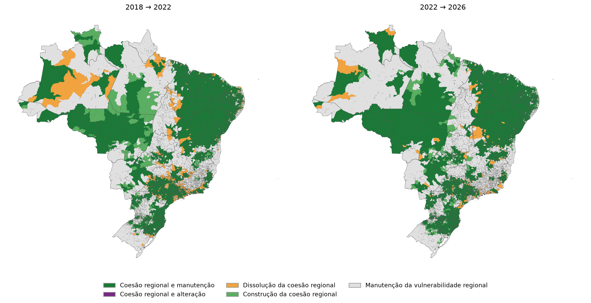
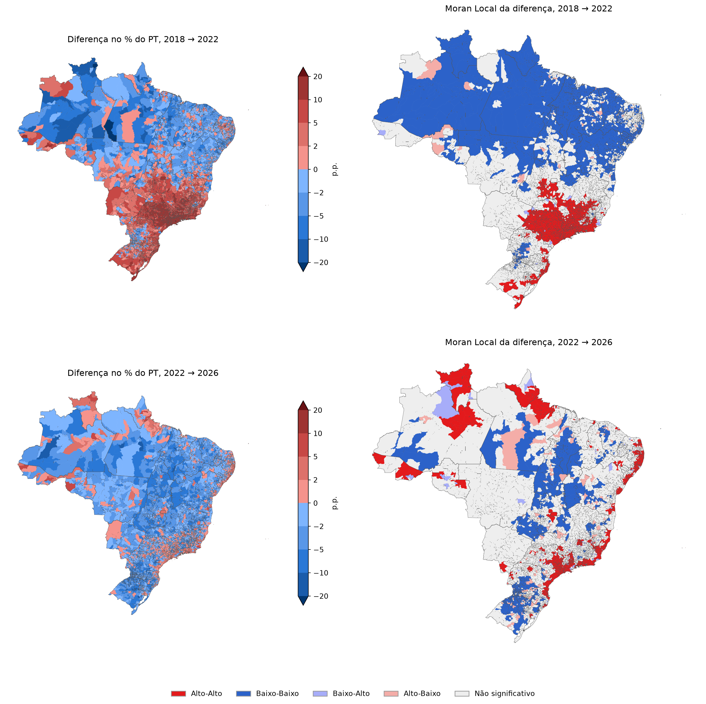

| Eleição | I de Moran | Média nas permutações | Desvio padrão | p |
|---|---|---|---|---|
| Haddad 2018 (2º turno) | 0,8993 | -0,0002 | 0,0083 | 0,0001 |
| Lula 2022 (2º turno) | 0,8831 | -0,0002 | 0,0082 | 0,0001 |
| Lula 2026 (2º turno) | 0,8959 | -0,0002 | 0,0082 | 0,0001 |
Geografia do voto no PT: Moran e LISA
2º turno presidencial de 2018, 2022 e 2026, por município
Esta página replica, para as três últimas eleições presidenciais, a análise geográfica de Soares e Terron (2008), Dois Lulas: a geografia eleitoral da reeleição (Opinião Pública, 14(2), p. 269–301). O artigo mediu o quanto a votação de Lula em 2002 e 2006 se agrupava no território. Aqui a mesma pergunta é feita para o candidato do PT no 2º turno: Haddad em 2018, Lula em 2022 e em 2026.
Método
Segue o artigo:
- Unidade: os 5.570 municípios. O voto no exterior fica de fora.
- Variável: % dos votos válidos do candidato do PT no município.
- Vizinhança: dois municípios são vizinhos quando têm fronteira comum (critério Queen, o padrão do GeoDa usado no artigo), com pesos padronizados por linha. Fernando de Noronha e Ilhabela, sem vizinho por terra, ficam ligados ao município mais próximo.
- I de Moran global: mede o quanto o voto num município se parece com o dos vizinhos (1 = agrupamento máximo, 0 = distribuição aleatória). Significância por 9.999 permutações.
- Moran Local (LISA): classifica cada município, com p < 0,05, em Alto-Alto (voto alto no PT cercado de vizinhos com voto alto), Baixo-Baixo, Alto-Baixo ou Baixo-Alto. O artigo chama os blocos Alto-Alto e Baixo-Baixo de bases geoeleitorais (zonas de coesão regional). Os municípios sem significância são as zonas de vulnerabilidade.
Os resultados vêm do TSE (votacao_secao, agregado por município) e a malha municipal do IBGE. O cálculo está em 10_autocorrelacao_espacial.qmd no repositório.
I de Moran global (Tabela 1)
Todos os valores são significativos ao nível de 0,0001, o menor possível com 9.999 permutações. No artigo, o I de Lula no 2º turno foi 0,5353 em 2002 e 0,8067 em 2006.

Bases geoeleitorais (Mapa 2)

Municípios e votos por categoria (Tabelas 2a–2c)
Para cada categoria: número e % de municípios, % dos votos válidos do país e % dos votos do candidato do PT.
Haddad 2018, 2º turno
| Categoria | Municípios | Municípios (%) | Válidos (%) | Votos Haddad (%) |
|---|---|---|---|---|
| Alto-Alto | 1.692 | 30,4 | 21,1 | 35,4 |
| Baixo-Baixo | 1.689 | 30,3 | 45,1 | 30,4 |
| Baixo-Alto | 11 | 0,2 | 0,8 | 0,8 |
| Alto-Baixo | 9 | 0,2 | 0,0 | 0,1 |
| Não significativo | 2.169 | 38,9 | 33,0 | 33,3 |
Alto-Alto e Baixo-Baixo somam 66,2% dos votos válidos.
Lula 2022, 2º turno
| Categoria | Municípios | Municípios (%) | Válidos (%) | Votos Lula (%) |
|---|---|---|---|---|
| Alto-Alto | 1.636 | 29,4 | 19,9 | 29,2 |
| Baixo-Baixo | 1.604 | 28,8 | 32,0 | 22,9 |
| Baixo-Alto | 10 | 0,2 | 0,7 | 0,7 |
| Alto-Baixo | 14 | 0,3 | 0,2 | 0,3 |
| Não significativo | 2.306 | 41,4 | 47,1 | 46,9 |
Alto-Alto e Baixo-Baixo somam 51,9% dos votos válidos.
Lula 2026, 2º turno
| Categoria | Municípios | Municípios (%) | Válidos (%) | Votos Lula (%) |
|---|---|---|---|---|
| Alto-Alto | 1.702 | 30,6 | 23,0 | 32,1 |
| Baixo-Baixo | 1.662 | 29,8 | 26,1 | 17,6 |
| Baixo-Alto | 8 | 0,1 | 0,4 | 0,4 |
| Alto-Baixo | 9 | 0,2 | 0,2 | 0,2 |
| Não significativo | 2.189 | 39,3 | 50,4 | 49,7 |
Alto-Alto e Baixo-Baixo somam 49,0% dos votos válidos.
No artigo, as duas categorias de coesão somavam 41,2% dos votos válidos em 2002 e 48,7% em 2006.
Dinâmica das bases geoeleitorais (Tabela 3)
Como cada município mudou de situação entre duas eleições:
- Coesão regional e manutenção: Alto-Alto ou Baixo-Baixo nas duas;
- Coesão regional e alteração: passou de Alto-Alto para Baixo-Baixo, ou o contrário;
- Dissolução da coesão regional: era Alto-Alto ou Baixo-Baixo e deixou de ser;
- Construção da coesão regional: passou a Alto-Alto ou Baixo-Baixo;
- Manutenção da vulnerabilidade regional: nem Alto-Alto nem Baixo-Baixo nas duas.
Alto-Baixo e Baixo-Alto contam como fora da coesão regional. A população é o eleitorado apto da eleição mais recente.
| Dinâmica | 2018 → 2022: Municípios | 2018 → 2022: Municípios (%) | 2018 → 2022: Eleitorado | 2018 → 2022: Eleitorado (%) | 2022 → 2026: Municípios | 2022 → 2026: Municípios (%) | 2022 → 2026: Eleitorado | 2022 → 2026: Eleitorado (%) |
|---|---|---|---|---|---|---|---|---|
| Coesão regional e manutenção | 2.980 | 53,5 | 77.526.527 | 49,8 | 3.072 | 55,2 | 70.250.085 | 44,5 |
| Coesão regional e alteração | 0 | 0,0 | 0 | 0,0 | 0 | 0,0 | 0 | 0,0 |
| Dissolução da coesão regional | 401 | 7,2 | 25.844.412 | 16,6 | 168 | 3,0 | 12.000.737 | 7,6 |
| Construção da coesão regional | 260 | 4,7 | 3.512.577 | 2,3 | 292 | 5,2 | 6.323.164 | 4,0 |
| Manutenção da vulnerabilidade regional | 1.929 | 34,6 | 48.874.833 | 31,4 | 2.038 | 36,6 | 69.250.508 | 43,9 |

Transições entre categorias
Linhas: eleição anterior; colunas: a seguinte.
2018 → 2022
| 2018 (linhas) × 2022 (colunas) | Alto-Alto | Baixo-Baixo | Baixo-Alto | Alto-Baixo | Não significativo |
|---|---|---|---|---|---|
| Alto-Alto | 1.576 | 0 | 5 | 0 | 111 |
| Baixo-Baixo | 0 | 1.404 | 0 | 6 | 279 |
| Baixo-Alto | 2 | 0 | 5 | 0 | 4 |
| Alto-Baixo | 0 | 3 | 0 | 4 | 2 |
| Não significativo | 58 | 197 | 0 | 4 | 1.910 |
2022 → 2026
| 2022 (linhas) × 2026 (colunas) | Alto-Alto | Baixo-Baixo | Baixo-Alto | Alto-Baixo | Não significativo |
|---|---|---|---|---|---|
| Alto-Alto | 1.593 | 0 | 2 | 0 | 41 |
| Baixo-Baixo | 0 | 1.479 | 0 | 0 | 125 |
| Baixo-Alto | 5 | 0 | 5 | 0 | 0 |
| Alto-Baixo | 0 | 6 | 0 | 6 | 2 |
| Não significativo | 104 | 177 | 1 | 3 | 2.021 |
Mudança entre eleições (Mapa 5)
Diferença no % dos válidos do candidato do PT, em pontos percentuais (eleição seguinte menos a anterior), e o Moran Local dessa diferença. Alto-Alto: o PT cresceu mais que a média no município e nos vizinhos.
| Comparação | I de Moran | Média nas permutações | Desvio padrão | p |
|---|---|---|---|---|
| 2018 → 2022 | 0,8073 | -0,0001 | 0,0082 | 0,0001 |
| 2022 → 2026 | 0,5521 | -0,0002 | 0,0082 | 0,0001 |
No artigo, o I da diferença 2002 → 2006 foi 0,7820.

Diferenças em relação ao artigo
- O artigo analisou 2002 e 2006 (5.564 municípios). Aqui são 2018, 2022 e 2026 (5.570), com as comparações 2018 → 2022 e 2022 → 2026.
- Variável: % dos votos válidos, sem brancos e nulos. A nota 3 do artigo define o denominador como votos nominais, brancos e nulos; o texto e as tabelas falam em votos válidos.
- Na Tabela 3, a população é o eleitorado apto, não a estimativa populacional.
- O artigo não diz como trata os municípios Alto-Baixo e Baixo-Alto na Tabela 3. Aqui eles contam como fora da coesão regional (são poucos: menos de 1% em cada eleição).
- Ficam de fora a análise do Bolsa Família e as regressões espaciais.
Os dados por município (categoria LISA de cada eleição, diferenças e dinâmica) estão em dados/03_saida/lisa_pt_municipio.gpkg, gerado pela etapa 10.